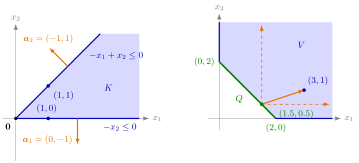

Polyhedral Convex Cone¶
Definition¶
Let . The polyhedral convex set
is called a polyhedral convex cone. It is always a closed convex cone (first Key Result below).
Interpretation¶
A polyhedral convex cone is the solution set of finitely many homogeneous linear inequalities , where is row of . Geometrically it is an intersection of finitely many closed halfspaces whose boundary hyperplanes all pass through the origin.

The left panel shows Example 2 below. Each row of gives a wall through the origin, and the row vector, or , points to the side that is cut away; is what remains behind both walls. The generators and of the same cone lie on the walls, which illustrates the Minkowski–Weyl theorem (Key Results below) in . The right panel shows Example 3 below: from the point of the segment , every direction of the cone (here the nonnegative quadrant, dashed) stays inside , and splits into a point of plus a direction in .
The right-hand side is what makes it a cone: for . With a right-hand side the set usually is not a cone (Example 4 below). The set is never empty, since , and zero rows of impose nothing; if has only zero rows, . In Math II, is the solution set of a homogeneous system, a subspace; replacing by turns the subspace into a cone.
A finitely generated convex cone is described from the inside, by generators; a polyhedral convex cone from the outside, by walls. The Minkowski–Weyl theorem, stated here without proof, says the two descriptions give the same family of sets (Example 2 below).
For a nonempty polyhedral convex set , the cone with the same matrix collects the directions in which one can move forever inside : if and , then for all . A further result, also stated without proof, makes this precise as with bounded (Key Results below). For the feasible region of a linear program from OR Modelling, is exactly what allows the region to be unbounded, which matters in Week 4.
Key Results¶
- For every , is a closed convex cone: it is closed and convex as a polyhedral convex set, and a cone because its right-hand side is .
- A set is a finitely generated convex cone if and only if it is a polyhedral convex cone (Minkowski–Weyl theorem, stated here without proof).
- If is nonempty, then with and a bounded polyhedral convex set (stated here without proof).
- If and , then for all ; hence whenever is nonempty and bounded.
Examples¶
1. A cone in . The set given by , , , is with
so it is a closed convex cone by the first Key Result above. Directly: for and , and , so is closed under addition and nonnegative scaling, which makes it a convex cone; it is closed because it is an intersection of finitely many closed halfspaces.
2. Walls and generators (Minkowski–Weyl in ). is polyhedral. It equals : both generators satisfy the two inequalities, and every is with nonnegative coefficients. Each generator lies on one wall: on , on .
3. Cone plus bounded part. , the part of the nonnegative quadrant with , is unbounded. Its cone is , the nonnegative quadrant. With the segment from to , a bounded polyhedral convex set, : for with , with and . For instance .
4. Boundary cases. The bounded triangle has cone , so is the triangle itself. The polyhedral set is not a cone: belongs to it but does not. Whether a set is a cone depends on the set, not on how it is written: has right-hand side , yet it equals , a polyhedral convex cone.
Prerequisites¶
Related Concepts¶
- Finitely Generated Convex Cone
- Polar Cone
- Normal Cone of a Polyhedral Set
- Extreme Points of a Polyhedral Set
- Possible Outcomes of a Linear Program
- Feasible Region
Sources¶
- Math VI: Convexity and Optimization · Week 2
- H. E. Nusse and M. Dienstknecht, Math VI: Convexity and Optimization, lecture notes 2026–2027, Section 2.3
Aliases: polyhedral cone, Minkowski–Weyl theorem Keywords: {\boldsymbol{x}\in\mathbb{R}^n\colon\boldsymbol{A}\boldsymbol{x}\leq\boldsymbol{0}}, V=K+Q, homogeneous linear inequalities, finitely generated if and only if polyhedral, cone plus bounded polyhedral set Symbols: element of, infinity, lambda, real numbers, subset
Last updated: 5 November 2026 12:47
Polyhedral Convex ConePolyhedral Convex SetHalfspaceConvex ConeHomogeneous and Inhomogeneous SystemsFinitely Generated Convex ConePolar ConeNormal Cone of a Polyhedral SetExtreme Points of a Polyhedral SetPossible Outcomes of a Linear ProgramFeasible Region